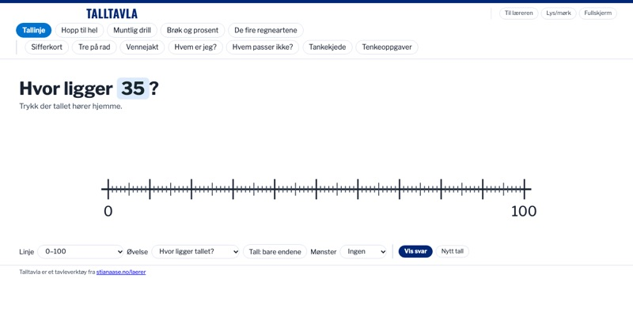
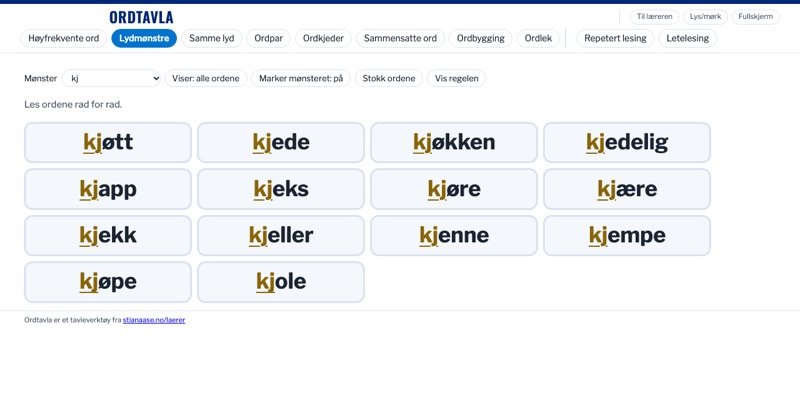
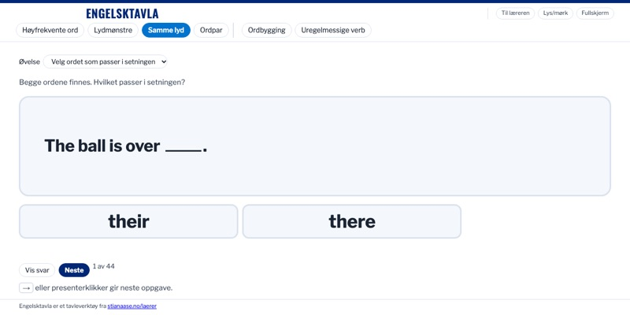
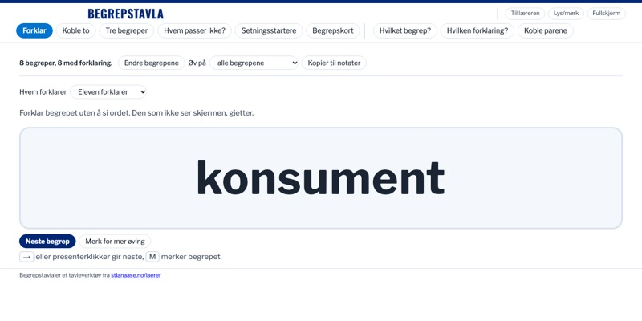

- Barnetrinnet
- Ungdomstrinnet
- Fritt å bruke
For lærere
Dette er verktøy jeg har laget til min egen undervisning: fire øvingstavler og to verktøy for musikk. De ble laget på ungdomstrinnet, men passer like godt på barnetrinnet, med én elev, en liten gruppe eller hele klassen. Alle kan bruke dem fritt. De åpnes i nettleseren uten innlogging, og det du skriver inn, blir liggende på maskinen du bruker.
Øvingstavler
Til én elev, en liten gruppe eller hele klassen, fra barnetrinnet til ungdomstrinnet.

TalltavlaPrøv: Start med fem minutter muntlig drill, og la eleven vise på tallinja hvor svaret ligger.
OrdtavlaPrøv: Ti minutter med én elev kan være noen runder høyfrekvente ord og ett lydmønster, som kj, lest rad for rad.
EngelsktavlaPrøv: Ta en kort runde med Samme lyd før skriving, der eleven velger mellom ord som their og there.
BegrepstavlaPrøv: Lim inn begrepene fra temaet før timen, og la eleven forklare et begrep uten å si ordet.
Musikk
Spill, lytt og lær akkordene, på lærerens Mac eller på elevens egen.


Hvordan verktøyene blir til
Jeg har jobbet som musiker og pedagog i over 25 år. I om lag tjue av dem underviste jeg elever én og én i kulturskolen. Der lærte jeg å lese hva den enkelte trenger akkurat nå, og å lage øvelser som passer. De siste fem årene har jeg jobbet mest på ungdomsskolen, og også der mye én og én, i spesialundervisningen. Underveis har jeg tatt videreutdanning i spesialpedagogikk, matematikk og programmering.
Med KI-verktøyene som har kommet de siste årene, henger dette sammen på en ny måte. Når jeg ser hva en elev eller en klasse trenger, kan jeg lage et verktøy for det på kort tid, prøve det i timen og justere det etterpå. Tavlene på denne siden startet slik, med konkrete situasjoner i klasserommet.
Hvem som har gjort hva
Tavlene er laget i samarbeid med KI-assistenten Claude fra Anthropic. Behovet, de fleste idéene og de pedagogiske valgene er mine. Claude har skrevet koden og førsteutkastene til tekstene, og jeg har prøvd tavlene i undervisningen og bestemt hva som er med. Hver ny versjon testes og faktasjekkes før den legges ut.
Kilder og lisenser ordlister, skrifttyper og vilkår
- Talltavla bruker ingen hentede lister. Oppgavene, tallene og forklaringene er laget for tavla, og svarene er regnet etter i automatiske tester.
- Ordtavla: «Høyfrekvente ord» bygger på to frekvenslister: «Frekvensordliste (bokmål) fra ord i norsk avisspråk» av CLARINO Bergen senter og Gunn Inger Lyse Samdal (Universitetet i Bergen, 2025, lisens CC BY 3.0), og den norske lista i FrequencyWords av hermitdave, som bygger på filmundertekster fra OpenSubtitles (lisens CC BY-SA 4.0). Lista er bearbeidet og kan brukes videre på vilkårene i CC BY-SA 4.0. Ordparene i «Samme lyd» er funnet i de samme frekvenslistene, og øvelsestypene bygger blant annet på Kristin Røeds hefte «Litt om lese- og skriveopplæring» (2020), brukt som metode. Ordene i de andre fanene, setningene og tekstene er skrevet for tavla.
- Engelsktavla: «Høyfrekvente ord» er de 300 vanligste ordformene i wordfreq av Robyn Speer (lisens CC BY-SA 4.0), bearbeidet. Ordene i de andre fanene er valgt for tavla og står ikke i noen bestemt kartleggingsprøve eller læreverk.
- Begrepstavla har ingen ferdige ord. Du limer inn begrepene selv.
- Piano og Gehørtrener lager lyden i nettleseren og bruker ingen lydfiler. Gehørtreneren lagrer det du skriver i «Mitt stykke» bare i nettleseren på maskinen du bruker.
- Skrifttypene Libre Franklin og Oswald har lisensen SIL Open Font License og ligger inne i filene, så tavlene henter ingenting fra nettet.
Kildene står også under «Til læreren» i hver tavle.
Kontakt
Jeg tar gjerne imot spørsmål om musikk og om verktøyene, og om kurs for lærere eller samarbeid om nye verktøy. Send meg en e-post.